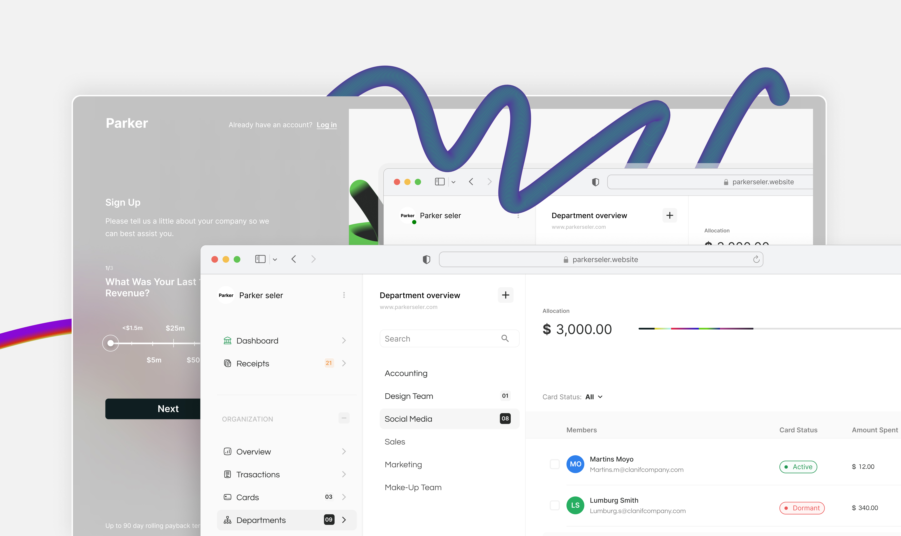
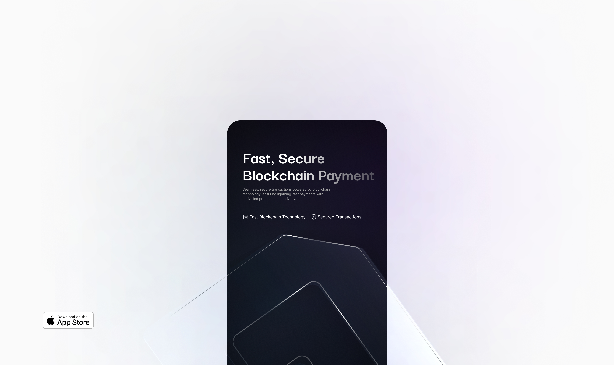
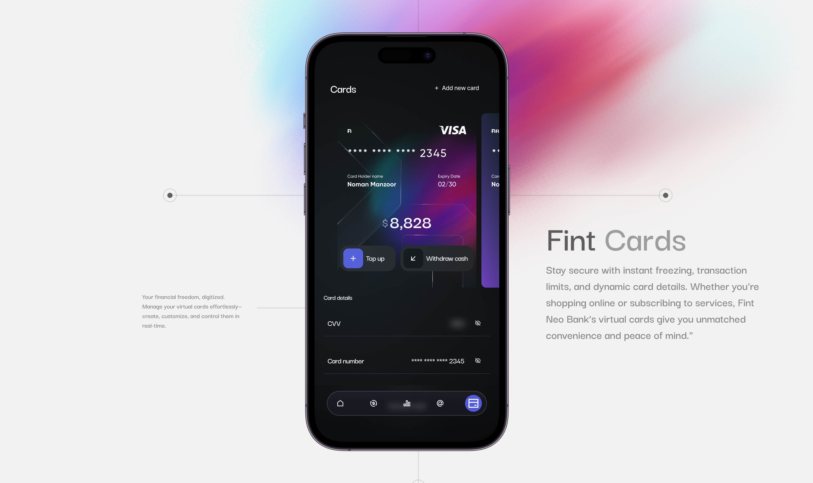
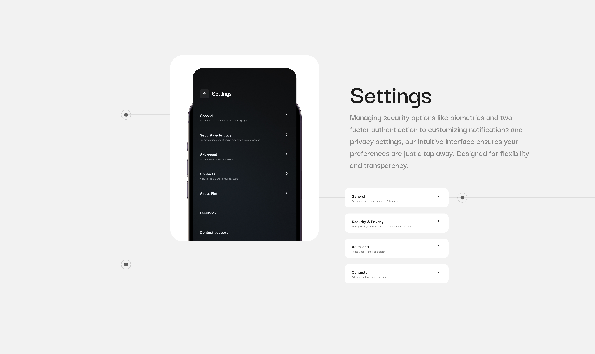
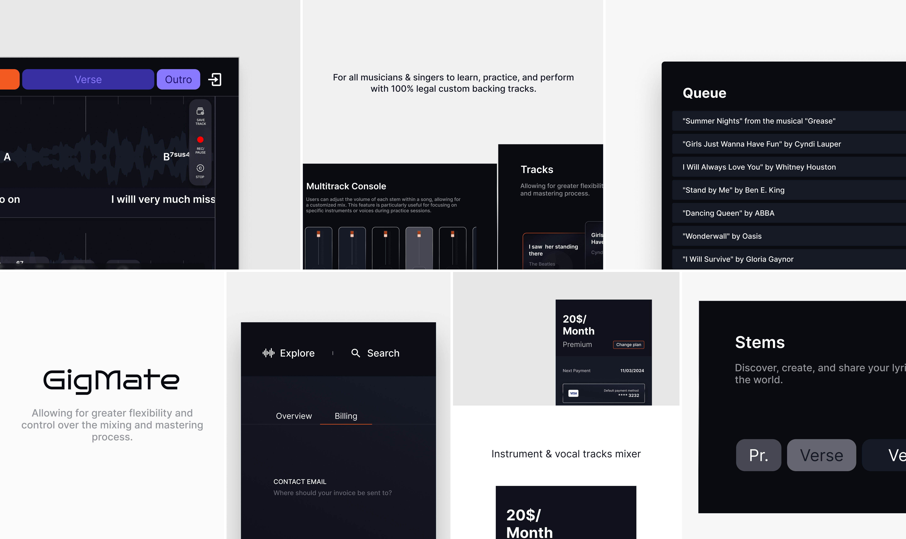

GetParker.
Credit, banking, and analytics designed to help you grow revenue and profitability as fast as you know you can. Uneven cash flow shouldn’t shackle your growth. GetParker is the only card you’ll find that gives you a true full credit period on every single swipe—with repayment periods up to 90 days.
Design process
Designing an app for Credit, banking, and analytics involves a thoughtful, user-centered approach that balances usability, security, and business value. Below is a structured design process tailored for this type of fintech app
1. Research & Discovery Phase
2. Defining Business Goals & Metrics
3. Information Architecture & Feature Prioritization
4. Wireframing & Prototyping
5. User Interface (UI) Design
1. Research & Discovery Phase
2. Defining Business Goals & Metrics
3. Information Architecture & Feature Prioritization
4. Wireframing & Prototyping
5. User Interface (UI) Design
Character
The design character for this web app exude trust, e-commerce, and growth. I figured the users should feel confident in their financial decisions, guided by a clear, user-friendly interface that makes complex financial data simple and actionable
• Personality: Professional, e-commerce, rich.
• Visuals: Clean, data-rich, intuitive.
• Efficient & direct
• Personality: Professional, e-commerce, rich.
• Visuals: Clean, data-rich, intuitive.
• Efficient & direct
Mission of brand
To empower businesses by providing seamless access to credit, banking, and analytics solutions that drive revenue and profitability. GetParker believe uneven cash flow should never limit your growth.
Target Audience & Brand positioning
Entrepreneurs, growing small-to-medium businesses, and high-potential companies seeking better cash flow management, smarter financial tools, and strategic growth opportunities.
• Business-Centric
• Financial Flexibility
• Growth-Focused
• Trustworthy
• Business-Centric
• Financial Flexibility
• Growth-Focused
• Trustworthy
Vision
By giving businesses more time to repay and smarter tools to manage their finances, Getparker aim's to fuel faster growth and greater profitability. At GetParker, they believe that unpredictable cash flow should never limit growth.




Fint Neobank.
Fint Neo Bank is a cutting-edge financial app that leverages blockchain technology to provide a secure, transparent, and efficient banking experience. Designed for the modern user, Fint offers seamless access to banking services like savings, and payments, while utilizing blockchain to enhance transaction security, reduce costs, and eliminate intermediaries. By embracing decentralized technology, Fint ensures faster processing times, greater privacy, and improved control over personal finances. Whether you're looking to manage everyday banking or explore digital assets, Fint combines innovation with reliability for a future-forward financial experience.
Strategy
1. Product Research
2. Logo Design & Brand Direction
3. UX Research
4. low Fidelity Wireframing
5. User Interface (UI) Design & Prototyping
6. Concept and Branding
2. Logo Design & Brand Direction
3. UX Research
4. low Fidelity Wireframing
5. User Interface (UI) Design & Prototyping
6. Concept and Branding
Character
Fint Neo Bank, embodying modernity, blockchain technology, and financial innovation. It reflects security, transparency, and futuristic financial solutions.
Mission of brand
To revolutionize the banking experience by harnessing the power of blockchain technology, providing modern users with secure, transparent, and cost-efficient financial solutions. Fint’s mission is to empower individuals with seamless access to banking services, faster transactions, and greater control over their financial assets, while eliminating traditional barriers and intermediaries. By embracing innovation and decentralization, Fint aim to build a future where banking is not only more efficient but also more inclusive and empowering for all.
Brand positioning
"Revolutionary Banking, Powered by Blockchain."
• User-friendly
• Leveraging decentralized technology to protect users' assets and ensure transparency in every transaction
• Seamless Experience
• Trustworthy
• Providing access to both traditional and digital assets for a holistic financial future
• Innovative
• User-friendly
• Leveraging decentralized technology to protect users' assets and ensure transparency in every transaction
• Seamless Experience
• Trustworthy
• Providing access to both traditional and digital assets for a holistic financial future
• Innovative
Unique Selling Proposition (USP)
Fint Neo Bank combines the power of blockchain with everyday banking services, offering a secure, transparent, and cost-efficient way to manage personal finances. It differentiates itself by removing intermediaries, reducing transaction fees, and ensuring fast, private, and reliable Transactions
Vision
Fint aim's to be a pioneer in merging traditional banking services like savings, and payments with the emerging world of digital assets. Fint seeks to create a financial ecosystem where innovation meets trust, ensuring that their customers experience both cutting-edge technology and reliability, all in one place. Through this vision, Fint aspires to shape the future of banking, offering a platform where personal finances are managed effortlessly, securely, and with maximum privacy.



User Persona: Alex Thompson
Alex is a self-employed graphic designer who often collaborates with clients worldwide, receiving payments through various platforms. He has used apps like Venmo and CashApp for quick transactions but is curious about blockchain technology. However, Alex doesn’t want to deal with complex crypto jargon or wallet addresses. He prefer simple, familiar interfaces where money transfers are straightforward and reliable.
• Age: 30
• Occupation: Freelance Graphic Designer
• Location: Brooklyn, New York
• Tech Proficiency: Intermediate (comfortable with everyday tech but not a blockchain expert)
• Income: $60,000 annually
• Education: Bachelor’s in Fine Arts
• Tech Devices: iPhone, MacBook Pro
• Age: 30
• Occupation: Freelance Graphic Designer
• Location: Brooklyn, New York
• Tech Proficiency: Intermediate (comfortable with everyday tech but not a blockchain expert)
• Income: $60,000 annually
• Education: Bachelor’s in Fine Arts
• Tech Devices: iPhone, MacBook Pro
Goals
• Simplified Transactions: Wants to send and receive payments quickly and securely without needing to understand blockchain deeply.
• Familiar Currency Representation: Prefers seeing balances in symbols they recognize (e.g., $ for USD-equivalent tokens) rather than confusing crypto symbols.
• Secure Payments: Values transactional security but doesn’t need constant reminders about the blockchain behind it.
• User-Friendly Tagging System: Appreciates username-based tagging, like CashApp’s $Cashtag, for easy and mistake-free payments to clients.
• Familiar Currency Representation: Prefers seeing balances in symbols they recognize (e.g., $ for USD-equivalent tokens) rather than confusing crypto symbols.
• Secure Payments: Values transactional security but doesn’t need constant reminders about the blockchain behind it.
• User-Friendly Tagging System: Appreciates username-based tagging, like CashApp’s $Cashtag, for easy and mistake-free payments to clients.
Challenges
• Blockchain Skepticism: Curious but cautious about blockchain and doesn’t want to deal with crypto wallets or technical terms.
• Complex Wallet Addresses: Finds traditional crypto wallet addresses intimidating and prone to mistakes.
• Usability Over Complexity: Avoids apps that over-complicate the experience with unfamiliar blockchain jargon or tech-heavy UI.
• Complex Wallet Addresses: Finds traditional crypto wallet addresses intimidating and prone to mistakes.
• Usability Over Complexity: Avoids apps that over-complicate the experience with unfamiliar blockchain jargon or tech-heavy UI.
Motivations
• Efficiency: Alex values time-saving, intuitive features that don’t require additional learning curves.
• Trust & Security: Even though they don’t want to know the nitty-gritty of blockchain, knowing transactions are secure builds confidence.
• Familiarity: Prefers platforms that resemble current digital finance apps, easing the transition to blockchain-based systems.
• Trust & Security: Even though they don’t want to know the nitty-gritty of blockchain, knowing transactions are secure builds confidence.
• Familiarity: Prefers platforms that resemble current digital finance apps, easing the transition to blockchain-based systems.
Key Features of the App (Aligned with Persona):
• Subtle Blockchain Awareness: Alex enjoys that the app uses blockchain for security and speed but without heavy emphasis on crypto-specific language.
• Familiar Currency Design: Seeing balances represented with the $ symbol ensures Alex doesn’t feel confused about how much they have or are transferring.
• Username-Based Tagging: Alex can create a custom username (e.g., @AlexDesigns), making it simple for clients to send payments without needing wallet addresses.
• Familiar Currency Design: Seeing balances represented with the $ symbol ensures Alex doesn’t feel confused about how much they have or are transferring.
• Username-Based Tagging: Alex can create a custom username (e.g., @AlexDesigns), making it simple for clients to send payments without needing wallet addresses.
Design Considerations for Alex
• Clean, Minimal UI: Avoiding cluttered or complicated interfaces. Highlighting important actions like "Send" and "Add funds" in a clear, accessible way.
• The onboarding process should be fast, with guided steps to create a username and link it to the balance without overwhelming blockchain explanations.
• The onboarding process should be fast, with guided steps to create a username and link it to the balance without overwhelming blockchain explanations.
Preferred Channels for Discovering the App
• App Store Recommendations
• Word of Mouth
• Freelancer Communities
• Design & Tech Newsletters
• Word of Mouth
• Freelancer Communities
• Design & Tech Newsletters
User Persona: Elena Blue
Elena is a busy professional who handles multiple transactions daily, both for personal and business needs. She is familiar with digital payment apps like Venmo, CashApp, and PayPal and expects intuitive, smooth experiences from financial tools. She’s tech-savvy enough to appreciate advanced technology but doesn’t want to spend time learning jargon or complex processes.
• Age: 28
• Occupation: Marketing Manager at a Tech Startup
• Location: Austin, Texas
• Tech Proficiency: Intermediate
• Income: $75,000/year
• Education: Bachelor's Degree in Communications
• Age: 28
• Occupation: Marketing Manager at a Tech Startup
• Location: Austin, Texas
• Tech Proficiency: Intermediate
• Income: $75,000/year
• Education: Bachelor's Degree in Communications
Personality and Values
• Confident and Adaptable: Elena is comfortable adopting new tech if it’s user-friendly.
• Efficiency-Driven: She values apps that save her time and help streamline both personal and professional tasks.
• Trust-Oriented: Security is important to her, but she doesn’t want to manage it herself — she trusts the app to do it for her.
• Efficiency-Driven: She values apps that save her time and help streamline both personal and professional tasks.
• Trust-Oriented: Security is important to her, but she doesn’t want to manage it herself — she trusts the app to do it for her.
Goals
• Simplify her personal and professional payments.
• Make fast and secure payments without worrying about technical details.
• Use familiar tools with minimal friction, ensuring seamless user experience.
• Make fast and secure payments without worrying about technical details.
• Use familiar tools with minimal friction, ensuring seamless user experience.
Challenges
• Confusion around cryptocurrency wallets and addresses.
• Hesitance to use blockchain-based tools because of perceived complexity.
• Jargon-heavy user interfaces in fintech apps.
• Lack of clear USD-like representations for digital assets in apps using crypto.
• Hesitance to use blockchain-based tools because of perceived complexity.
• Jargon-heavy user interfaces in fintech apps.
• Lack of clear USD-like representations for digital assets in apps using crypto.
Motivations
• Wants tools that enhance her productivity and security without adding complexity.
• Seeks a reliable app to use for both personal payments (splitting bills, sending money to friends) and professional transactions (paying freelancers, receiving payments).
• Desires a modern solution but values familiarity and ease of use, like username-based payment tags.
• Seeks a reliable app to use for both personal payments (splitting bills, sending money to friends) and professional transactions (paying freelancers, receiving payments).
• Desires a modern solution but values familiarity and ease of use, like username-based payment tags.
Design Considerations for Elena
• Subtle Blockchain Awareness: Elena doesn’t need to know she’s using blockchain but will appreciate the speed and security it offers. Avoid technical terminology like “USDC” or “wallet addresses” — she wants to see “balance” or “money” and send payments via usernames.
• Familiar Currency Representation: Use a symbol that mimics USD ($) for balances. Elena wants it to feel familiar, so she doesn’t need to question if her money is secure or usable.
• Username-Based Tagging: Implement a simple, recognizable username system (similar to CashApp’s $Cashtag), so Elena can send and receive payments without diving into complex blockchain mechanics. She finds usernames easier to remember and less prone to error than lengthy wallet addresses.
• Familiar Currency Representation: Use a symbol that mimics USD ($) for balances. Elena wants it to feel familiar, so she doesn’t need to question if her money is secure or usable.
• Username-Based Tagging: Implement a simple, recognizable username system (similar to CashApp’s $Cashtag), so Elena can send and receive payments without diving into complex blockchain mechanics. She finds usernames easier to remember and less prone to error than lengthy wallet addresses.
Property insight and management platform.
The Property Insight and Management Platform aims to provide real estate professionals with powerful tools to manage and gain insights from their property data. The platform will streamline the import, analysis, and visualization of property-related data while allowing for secure, role-based access and providing scenario-based forecasting capabilities.
Roadmap
• Basic data import, analysis, and reporting functionalities.
• Role-based access management.
• Scenario planning and forecasting features.
• Advanced reporting and visualization.
• Enhanced data import/export options.
• Integrations with external property management software.
• Real-time data updates and advanced forecasting models.
• Role-based access management.
• Scenario planning and forecasting features.
• Advanced reporting and visualization.
• Enhanced data import/export options.
• Integrations with external property management software.
• Real-time data updates and advanced forecasting models.
Growth Objactives
• Increase user acquisition over 12 months.
• Enhance user engagement by adding more value-driven features.
• Improve retention through continuous product updates and personalized user experiences.
• Expand market reach by targeting real estate professionals in emerging markets and integrating with widely used real estate systems.
• Enhance user engagement by adding more value-driven features.
• Improve retention through continuous product updates and personalized user experiences.
• Expand market reach by targeting real estate professionals in emerging markets and integrating with widely used real estate systems.
User Personas
• Property Managers: Need real-time access to property performance data and user-friendly reporting tools.
• Real Estate Investors: Require in-depth analysis, scenario planning, and forecasting to inform investment decisions.
• Financial Analysts: Focus on data analysis and reporting tools for understanding financial trends and generating insights for stakeholders.
• IT/Admins: Manage access control, data import/export, and system integrations.
• Real Estate Investors: Require in-depth analysis, scenario planning, and forecasting to inform investment decisions.
• Financial Analysts: Focus on data analysis and reporting tools for understanding financial trends and generating insights for stakeholders.
• IT/Admins: Manage access control, data import/export, and system integrations.
Growth Metrics and KPIs
• User Acquisition:- Tracking growth in user numbers, specifically targeting property managers, investors, and developers.
• User Engagement:- Measuring the time users spend on the platform, particularly during data analysis and report generation tasks. Tracking how often users generate reports, as it directly correlates with engagement.
• User Retention:- Using surveys to gauge user satisfaction and willingness to recommend the platform.
• User Engagement:- Measuring the time users spend on the platform, particularly during data analysis and report generation tasks. Tracking how often users generate reports, as it directly correlates with engagement.
• User Retention:- Using surveys to gauge user satisfaction and willingness to recommend the platform.
Technical Considerations
• Cloud-based architecture for scalability and remote access.
• Support for API integrations with third-party property management and financial software.
• Data security through encryption, access control, and compliance with real estate data privacy laws.
• Support for API integrations with third-party property management and financial software.
• Data security through encryption, access control, and compliance with real estate data privacy laws.
Conclusion
The Property Insight and Management Platform is well-positioned for growth by leveraging data-driven insights, powerful reporting tools, and forecasting capabilities. With strategic product enhancements and focused go-to-market efforts, the platform can increase its user base, improve engagement, and expand into new markets, driving sustainable growth over the long term.


Infinity
Infinity emphasizes high performance, offering real-time market data, rapid order execution, and advanced charting tools to enhance the trading experience. With a commitment to transparency, the platform ensures that users have full visibility into market movements, order books, and transaction histories, fostering trust and confidence in every trade. Infinity also integrates robust security measures, protecting users’ assets with advanced encryption and multi-layered security protocols.Designed to be flexible, Infinity supports a wide range of assets, from cryptocurrencies to traditional stocks and commodities, giving users the freedom to diversify their portfolios within a single platform. Whether you are a professional trader or a newcomer to spot trading, Infinity aims to provide a seamless, powerful, and reliable trading environment that aligns with the demands of modern financial markets..

Gigmate
Gigmate is a revolutionary tool designed to provide musicians, producers, and enthusiasts with greater flexibility and control over the mixing and mastering process. With Gigmate, users can individually adjust the volume of each stem within a song, allowing for a fully customized mix. This unique feature empowers users to focus on specific instruments or vocals, making it ideal for practice sessions or detailed listening experiences. Whether you're preparing for a gig, refining your skills, or exploring creative possibilities, Gigmate offers a seamless, user-friendly interface that enhances your interaction with music. By giving users control over each layer of sound, Gigmate redefines the way we engage with music, making it a valuable tool for both professionals and hobbyists alike.
-
services2.0
Explore My Expertise in Crafting Digital Solutions That Drive Success
With a holistic approach, I design and shape digital solutions that connect with users, drive engagement, and align with strategic goals, from start to finish
Why Choose Me?
Every brand has a story and I help you tell it through powerful digital experiences. By blending human-centered design with strategic growth initiatives, I create solutions that spark connection, inspire loyalty, and future-proof your business. Design isn’t just how it looks, it’s how it makes your users feel, grow, and stay.
Every brand has a story and I help you tell it through powerful digital experiences. By blending human-centered design with strategic growth initiatives, I create solutions that spark connection, inspire loyalty, and future-proof your business. Design isn’t just how it looks, it’s how it makes your users feel, grow, and stay.
My services include...

Product Design
I design with empathy and intent, shaping intuitive, beautiful web and mobile experiences that solve real-world problems.
From first sketch to final launch, every detail is crafted to meet user needs and drive real business value.
From first sketch to final launch, every detail is crafted to meet user needs and drive real business value.

GPM {growth-product management}
Beyond building products, I drive their Growth .
Through strategic planning, user research, and data-driven decisions, I guide products from concept to market success, fueling user acquisition, retention, and meaningful engagement at every stage.
Through strategic planning, user research, and data-driven decisions, I guide products from concept to market success, fueling user acquisition, retention, and meaningful engagement at every stage.

Communication Design
Your brand deserves more than just visuals, it deserves a voice, a feeling, a presence.
I create designs that not only catch the eye but also tell your story with clarity, creativity, and emotional resonance across digital and print platforms.
I create designs that not only catch the eye but also tell your story with clarity, creativity, and emotional resonance across digital and print platforms.

cx design
Great products aren't enough, great experiences are what people remember.
I map and design customer journeys that feel effortless, intuitive, and human. turning every interaction into an opportunity for deeper connection and loyalty.
I map and design customer journeys that feel effortless, intuitive, and human. turning every interaction into an opportunity for deeper connection and loyalty.
-
testimonials3.0
100+ Projects. One Goal: Excellence.


Blending design, strategy, and product leadership, I craft digital experiences that drive growth and deepen user connection
-
EXPERIENCE4.0
Experience & Tools
I'm a Senior Product Designer and Product Manager with over 7 years of experience designing and shaping digital products for startups, enterprises, and global brands across web and mobile platforms.
Rooted in a foundation of architectural design and driven by a human-centered approach, I specialize in creating clean, intuitive, and impactful experiences that align business goals with user needs.
Throughout my career, I have led product discovery, user research, and strategic roadmapping initiatives,collaborating with cross-functional teams to transform complex ideas into scalable solutions. My expertise spans across UX/UI design, motion design, interaction design, design systems, usability testing, and product strategy, enabling me to craft digital experiences that are not only visually compelling but also highly functional.
As a Product Manager, I have navigated product lifecycles from ideation through launch, ensuring alignment between user needs, business objectives, and technical constraints. I thrive in fast-paced, agile environments where collaboration, critical thinking, and stakeholder engagement are essential to delivering results.
My work has spanned multiple industries, including fintech, real estate, education, enterprise technology, and consumer products. I am experienced in collaborating remotely with international teams across the U.S., Europe, and Africa, and have built a reputation for delivering design solutions that are empathetic, strategic, and user-focused.
Beyond the screen, I actively mentor young designers, advocate for nonprofit tech initiatives, and continuously push the boundaries of creative problem-solving through a deep commitment to learning and innovation.
When working with me, you can expect a thoughtful blend of strategic thinking, meticulous design execution, and an unwavering dedication to creating digital experiences that are both beautiful and meaningful.
since 2019
Figma
As a core part of my design process, Figma serves as my go-to platform for crafting seamless user interfaces and comprehensive design systems. From prototyping and design systems to collaborating with remote teams, Figma enables me to translate complex ideas into interactive, high-fidelity designs. I also appreciate its capability to streamline feedback loops, ensuring rapid iteration and refined designs, which is crucial when working on both design and product management tasks.
since 2021
miro
Miro is indispensable in my process, especially during early-stage ideation and collaborative workshops. Whether I'm creating user journey maps, wireframes, or facilitating design sprints with cross-functional teams, Miro helps visualize and organize ideas in a way that encourages creativity and alignment. It’s a space where we can quickly iterate on concepts, gather insights, and chart the next steps for product development, making it invaluable for both design and strategy alignment.

since 2013
adobe
The Adobe Creative Suite is where my Graphic Design expertise shines. From Adobe XD for interactive prototypes to Illustrator for vector-based designs, Photoshop for UI elements, and After Effects for Motion Design , Adobe tools allow me to create visually striking designs that go beyond static elements. I leverage these tools in tandem with Figma to deliver pixel-perfect designs that align with a brand's identity, ensuring the experience is both aesthetic and functional. Premiere Pro and InDesign also come into play when crafting videos or product documentation for pitches or presentations.
since 2023
linear
Linear is an integral part of my product management toolkit. Its intuitive interface and powerful features allow me to manage product roadmaps, track tasks, and prioritize efficiently across the entire product development cycle. As a Senior Product Designer, Linear empowers me to stay organized, manage timelines, and collaborate seamlessly with developers and other stakeholders, ensuring alignment between design and engineering while driving the product forward.
well...
spotify
While Spotify is more of a personal tool, it plays a surprisingly vital role in my workflow. I use music as a way to enhance my creativity and maintain focus throughout the design and product management process. Whether I'm brainstorming new design ideas, fine-tuning prototypes, or running user research sessions, a well-curated playlist keeps me energized and in the zone. It’s a small, but key tool that helps fuel my productivity and maintain a positive mindset.
-
articles5.0
write up’s
Still writing
Medium ® — I've learned that sometimes you have to break the rules to set things right. Magic doesn't always follow the book, and neither do I.
(01)

-
CONTACT6.0
Let’s Create Something Remarkable Together
Every great project starts with a conversation. Let's build something that matters.
© Martins 2025. All Rights Resevered